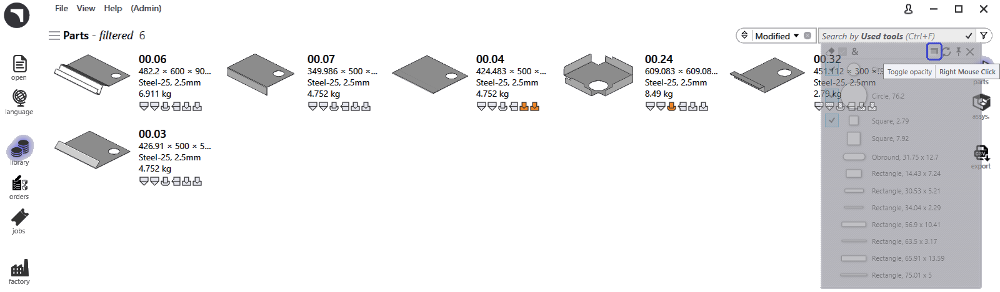

Filtros de tareas
Los filtros de la página de tareas le ayudan a localizar tareas, piezas activas y nestings mostrando únicamente los elementos que coinciden con las condiciones seleccionadas. Simplifican la búsqueda, la ordenación y la gestión de tareas o piezas, mejorando la eficiencia general del flujo de trabajo.
Ejemplos de filtros disponibles
Priority and Due on
-
El filtro Priority le permite buscar y mostrar piezas o tareas según su prioridad asignada (Urgent, High, Low, Normal).
-
Cuando selecciona un nivel de prioridad concreto, solo se resaltan o muestran en los resultados las piezas con esa prioridad específica.
-
Por ejemplo, si elige la prioridad High, el sistema filtrará y resaltará únicamente las piezas marcadas como High Priority en el nesting.

-
El filtro Due on le permite buscar y mostrar piezas o tareas según sus fechas asignadas.
-
Cuando selecciona una fecha de vencimiento concreta, solo se resaltan o muestran en los resultados las piezas con esa fecha de vencimiento específica.
-
Aparte de los filtros de fecha de vencimiento predefinidos como Today, Yesterday, Tomorrow, etc., también puede introducir valores o intervalos de fecha personalizados en formato yymmdd en el cuadro de búsqueda.
-
También puede utilizar expresiones con operadores de desigualdad (<, <=, >, >=, =) seguidos del valor de la fecha. Ejemplo: >=250901 buscaría todos los elementos cuyo vencimiento sea el 1 de septiembre de 2025 o posterior.
|
Si la lista de filtros oculta el contenido de la búsqueda, puede hacerla
transparente mediante el comando Toggle opacity
 . |
Part name/ Layout name
-
El filtro Part name estará disponible en las páginas de tareas y de nesting.
-
A medida que escribe el nombre de la pieza, se muestra una lista de sugerencias para ayudarle a seleccionar rápidamente la pieza correcta.
-
Al seleccionar uno o varios elementos de la lista de sugerencias, los resultados de la búsqueda se limitan únicamente a las piezas seleccionadas.
-
En la página de tareas, este comportamiento se amplía para incluir los nombres de diseño, lo que permite a los usuarios buscar por nombre de pieza o por nombre de diseño.
Remnant
-
Utilice el filtro Remnant para buscar diseños según la disponibilidad de restos.
-
El menú desplegable muestra las siguientes opciones:
-
No Remnant - enumera los diseños en los que no se ha creado ningún resto.
-
Exists - enumera los diseños en los que ya existe un resto.
-
Added - enumera los diseños en los que se ha añadido un nuevo resto.
-
-
Ayuda a identificar y gestionar de forma eficiente los materiales de chapa sobrantes.